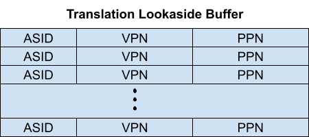

In this lab you will explore page tables and modify them to speed up certain system calls and to detect which pages have been accessed.
Before you start coding, read Chapter 3 of the xv6 book, and related files:
In this lab, there are several questions for you to answer. Questions are in boxes with a light orange background. Write each question and its answer in your notebook. Take photo(s) of your questions/answers and submit the photo(s) on Canvas.
The Linux grep command can be helpful on some questions. For example, suppose a question asks you about the macro TRAPFRAME. You can discover the definition and uses of the macro TRAPFRAME by issuing the following Linux grep command in the kernel directory.
$ grep TRAPFRAME *.h memlayout.h:// TRAPFRAME (p->trapframe, used by the trampoline) memlayout.h:#define TRAPFRAME (TRAMPOLINE - PGSIZE) memlayout.h:#define USYSCALL (TRAPFRAME - PGSIZE) % grep TRAPFRAME *.c proc.c: if(mappages(pagetable, TRAPFRAME, PGSIZE, proc.c: uvmunmap(pagetable, TRAPFRAME, 1, 0); proc.c: uvmunmap(pagetable, TRAPFRAME, 1, 0);
In the directory of your xv6-labs, create two files: answers-syscall.txt and time.txt that the grading script looks for. You can create these files by the following:
$ echo > answers-syscall.txt $ echo 10 > time.txtI use the information in your photo files and your lab-syscall-handin.txt file that you submit on Canvas. I have retained these files and this grading script approach in case I want to use it in the future.
To start the lab, switch to the pgtbl branch:
$ git fetch $ git checkout pgtbl $ make clean
The first six questions are warmup. Refer to Figure 3-2 of our Xv6 Textbook.
1. Draw a diagram of a RISC-V virtual address (VA).
2. Draw a diagram of a RISC-V physical address (PA).
3. Draw a diagram of a RISC-V page table entry? Underneath of your diagram, write the meanings of the PTE fields/bits? For example, the V bit means this PTE refers to a valid page that is part of the proc's address page. Another way to say this is the VA is mapped to a PA.
4. How many bits is a physical address (PA)?
5. How many bits is a virtual address (VA)?
6. How many bits is a physical page number?
Some operating systems (e.g., Linux) speed up certain system calls by sharing data in a read-only region between userspace and the kernel. This eliminates the need for kernel crossings when performing these system calls. To help you learn how to insert mappings into a page table, your first task is to implement this optimization for the getpid() system call in xv6.
When each process is created, map one read-only page at USYSCALL (a virtual address defined in memlayout.h). At the start of this page, store a struct usyscall (also defined in memlayout.h), and initialize it to store the PID of the current process. This initial mapping is done in the kernel, which creates processes. You must also map this page in the proc's pagetable. For this lab, ugetpid() has been provided on the userspace side and will automatically use the USYSCALL mapping. You will receive full credit for this part of the lab if the ugetpid test case passes when running pgtbltest.
Some hints:
You should study how allocproc allocates the TRAPFRAME page to get ideas for how to allocate the USYSCALL page.
7. How does allocproc allocate the TRAPFRAME page?
8. How does kalloc allocate a page?
The file memlayout.h defines the virtual memory layout of the kernel with various macros such as KERNBASE, PHYSTOP, MAXVA, TRAMPOLINE, and TRAPFRAME. The TRAMPOLINE page is mapped to the top of the virtual address space, and TRAPFRAME is the page immediately below TRAMPOLINE. You can study memlayout.h as you examine Figure 3.3 of our xv6 text book.
As mentioned above, the file memlayout.h contains two pieces of information that you will use - USYSCALL and struct usyscall.
#define USYSCALL (TRAPFRAME - PGSIZE)
The struct usyscall is defined specifically for this assignment. usyscall has one member, int pid.
9. What are the values of the macros TRAPFRAME and PGSIZE?
10. Explain how the expression defining the macro MAXVA relates the the format of the VA.
The file user/ulib.c contains a user library function ugetpid, which is called from the function ugetpid_test in user/pgtbltest.c.
Choose permission bits that allow userspace to only read the page. The file riscv.h defines page protection attributes.
There are several things that need to be done over the lifecycle of a new page, which must be deallocated as well as allocated.. For inspiration, understand the trapframe handling in kernel/proc.c. Search for trapframe to get yourself going.
11. The above blue box with this problem's specification states that ugetpid() has been provided on the userspace side. Where is ugetpid() located and how is is included in the executable test program pgtbltest? Explain how it works.
12. Draw a diagram of kalloc's data structure of free pages.
To help you visualize RISC-V page tables, and perhaps to aid future debugging, your second task is to write a function that prints the contents of a page table.
Define a function called vmprint(). It should take a pagetable_t argument, and print that pagetable in the format described below. Insert if(p->pid==1) vmprint(p->pagetable) in exec.c just before the return argc, to print the first process's page table. You receive full credit for this part of the lab if you pass the pte printout test of make grade.
Now when you start xv6 it should print output like this, describing the page table of the first process at the point when it has just finished exec()ing init:
page table 0x0000000087f6b000 ..0: pte 0x0000000021fd9c01 pa 0x0000000087f67000 .. ..0: pte 0x0000000021fd9801 pa 0x0000000087f66000 .. .. ..0: pte 0x0000000021fda01b pa 0x0000000087f68000 .. .. ..1: pte 0x0000000021fd9417 pa 0x0000000087f65000 .. .. ..2: pte 0x0000000021fd9007 pa 0x0000000087f64000 .. .. ..3: pte 0x0000000021fd8c17 pa 0x0000000087f63000 ..255: pte 0x0000000021fda801 pa 0x0000000087f6a000 .. ..511: pte 0x0000000021fda401 pa 0x0000000087f69000 .. .. ..509: pte 0x0000000021fdcc13 pa 0x0000000087f73000 .. .. ..510: pte 0x0000000021fdd007 pa 0x0000000087f74000 .. .. ..511: pte 0x0000000020001c0b pa 0x0000000080007000 init: starting sh
13. Why do all of the physical addresses end with three hexadecimal zeros?
Your code might emit different physical addresses than those shown above. The number of entries and the virtual addresses should be the same.
Some hints:
uint64 child = PTE2PA(pte);The macro PTE2PA is defined in riscv.h, and it converts a page table entry to a physical address. PTE2PA is given by the following.
#define PTE2PA(pte) (((pte) >> 10) << 12)
14. Explain how the macro PTE2PA converts a PTE into a PA.
15. For every leaf page in the vmprint output, explain what it logically contains and what its permission bits are. Figure 3.4 in the xv6 book might be helpful, although note that the figure might have a slightly different set of pages than the init process that's being inspected here.
16. Xv6 does not have address space randomization. Search for this concept of address space randomization, explain it, and why is it important in today's systems?
17. Unix implementations of exec traditionally include special handling for shell scripts. If the file to execute begins with the text #!, then the first line is taken to be a program to run to interpret the file. For example, if exec is called to run myprog arg1 and myprog's first line is #!/interp, then exec runs /interp with command line /interp myprog arg1. Discuss how you would Implement support for this convention in xv6.
Some garbage collectors (a form of automatic memory management) can benefit from information about which pages have been accessed (read or write). In this part of the lab, you will add a new feature to xv6 that detects and reports this information to userspace by inspecting the access bits in the RISC-V page table. The RISC-V hardware page walker marks these bits in the PTE whenever it resolves a TLB miss.
Your job is to implement a system call, pgaccess(), that reports which pages have been accessed. The system call takes three arguments. The first argument is the starting virtual address of the first user page to check. The second argument is number of pages to check. The third argument is a user address to a buffer to store the results into a bitmask (a datastructure that uses one bit per page and where the first page corresponds to the least significant bit). You will receive full credit for this part of the lab if the pgaccess test case passes when running pgtbltest.
Some hints:
char a[3*PGSIZE]; unsigend int x; ... some code here that may access a ... pgaccess(a, 3, &x);If a[0] has changed, bit 0 of x will be set. If a[4096] has changed, bit 1 of x will be set. If a[8192] has changed, bit 2 of x will be set.
18. The above code snippet will not work in Xv6, because it defines the variable a as a local variable that would be allocated on the stack. Why will this NOT work on Xv6?
19. How does the function pgaccess_test() in pgtbltest.c define its variable that corresponds to a?
1 int
2 pgaccess(uint64 va_start, int npage, uint64 res_addr)
3 {
4 if(va_start > MAXVA) {
5 panic("pgaccess: too large VA");
6 }
7 if(npage > 32){
8 panic("pgaccess: too many pages");
9 }
10
11 uint res = 0;
12 struct proc *p = myproc();
13 for(int i=0; i<npage; i++){
14 uint64 va = va_start + i * PGSIZE;
15 pte_t *pte = walk(p->pagetable, va, 0);
16 if((*pte & PTE_V) && (*pte & PTE_A)) {
17 res |= (1 << i);
18 *pte ^= PTE_A;
19 }
20 }
21 return copyout(p->pagetable, res_addr, (char*)&res, sizeof(res));
22 }
20. Explain the if statement on lines 16 through 19 of the function pgaccess() given above.
21. Suppose you have the following page table information, which is formatted like the Print a page table problem. Explain how you convert the PTE value (e.g., 0x021fd9c01) to its PA (e.g., 0x87f67000).
page table 0x0000000087f6b000 ..0: pte 0x0000000021fd9c01 pa 0x0000000087f67000 .. ..0: pte 0x0000000021fd9801 pa 0x0000000087f66000 .. .. ..0: pte 0x0000000021fda01b pa 0x0000000087f68000
22. The function walk() in vm.c "walks" a RISC-V Sv39 page table. The Sv39 indicates a 39 bit VA as shown in Xv6 Textbook, Figure 3.2. The succinct code for walk() is given as follows.
pte_t * walk(pagetable_t pagetable, uint64 va, int alloc) {
if(va >= MAXVA)
panic("walk");
for(int level = 2; level > 0; level--) {
pte_t *pte = &pagetable[PX(level, va)];
if(*pte & PTE_V) {
pagetable = (pagetable_t)PTE2PA(*pte);
} else {
if(!alloc || (pagetable = (pde_t*)kalloc()) == 0)
return 0;
memset(pagetable, 0, PGSIZE);
*pte = PA2PTE(pagetable) | PTE_V;
}
}
return &pagetable[PX(0, va)];
}
A. Explain the PX macro. Give an example.
B. Explain the PTE2PA macro.
C. Pick a level and explain the assignment statement.
pte_t *pte = &pagetable[PX(level, va)];
D. Explain the PA2PTE macro.
E. Explain how walk adds a PTE to a pagetable when the argument alloc is not 0.
23. Given the diagram below for a Translation Lookaside Buffer, search the Internet to help your answer the following.
A. Explain how a TLB makes paging more efficient. This one you should know without searching, but search if you must.
B. What does Xv6 do when it must change to a new page table? This one will require you to examine Xv6.
C. Explain how an OS would use the ASID field in the TLB to make paging more efficient. Search for ASID and how it is used. ASID is Address Space Identifier.

This completes the lab. Make sure you pass all of the make
grade tests.
Read Lab Submissions for instructions on how
to submit your lab.
Submit the lab